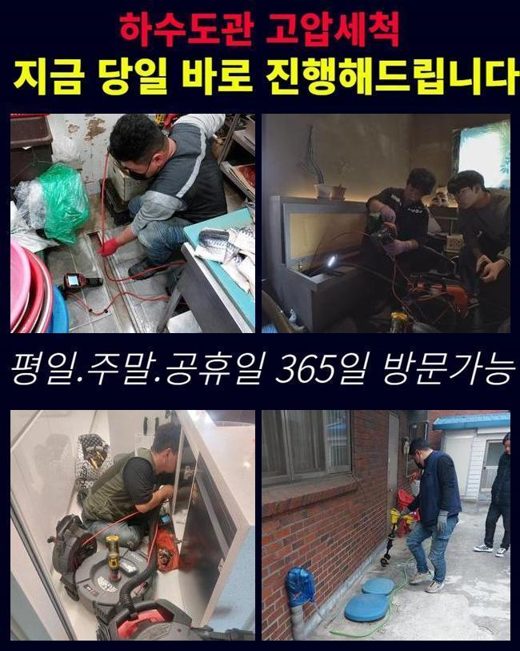
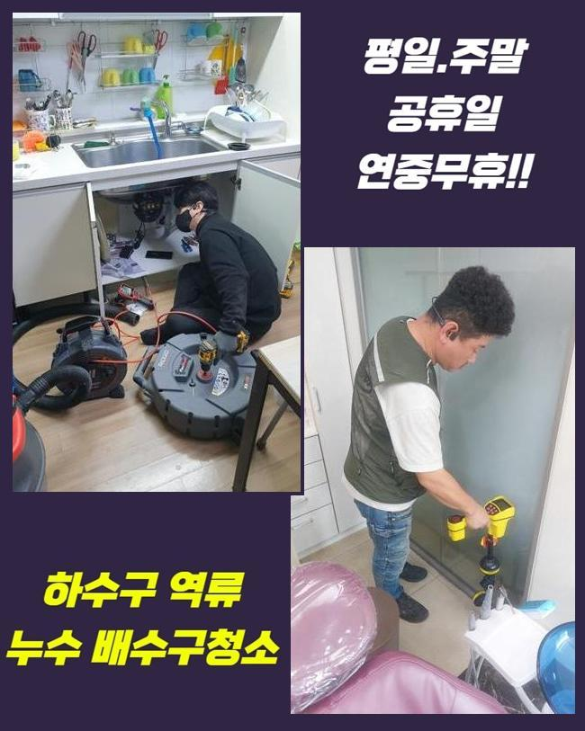
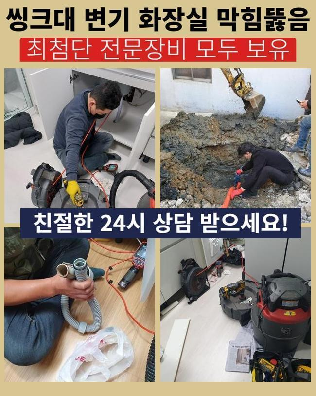
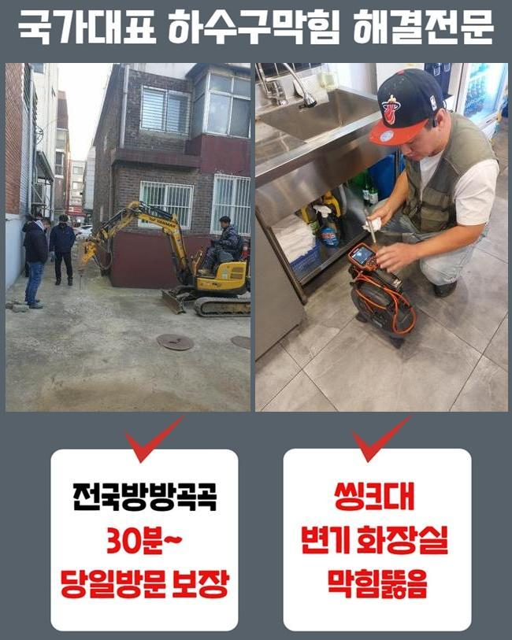
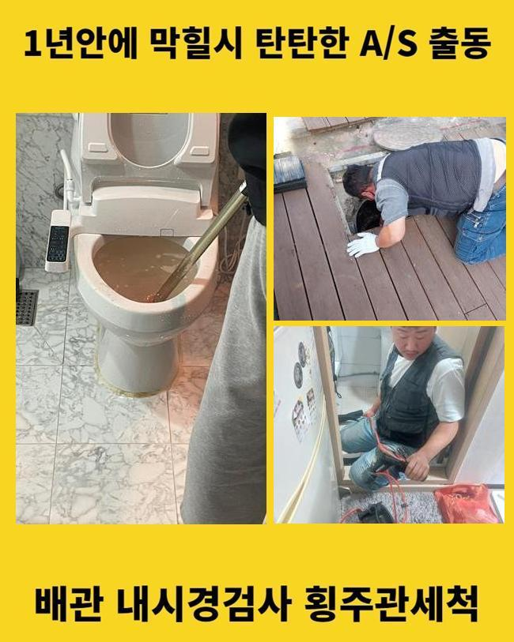
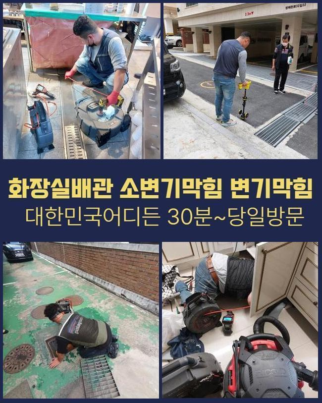
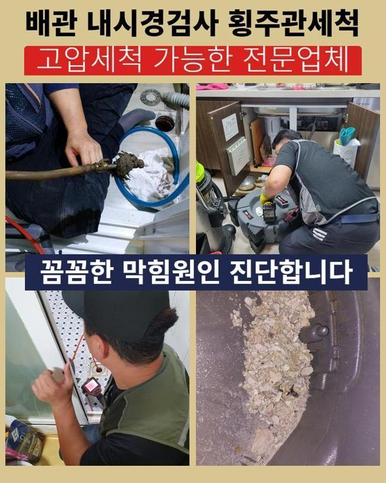

🏠 구리시 인창동싱크대막힘 동구동 배관내시경카메라 수리업체
용인 싱크대막힘 전문 시공 후기

📋 작업 개요
- 위치: 용인
- 서비스 유형: 싱크대막힘, 하수구막힘, 배관막힘, 누수수리, 역류해결, 뚫는업체, 배관청소
- 작업 일시: 2025. 5. 17. 22:46
- 업체명: 하수구수사대 (010-5615-2118)
🔍 문제 상황
구리시 인창동싱크대막힘 동구동 배관내시경카메라 수리업체
세면대배수관의 정체가 나타난다면 배수가 이뤄지지않아 고일 확률이 커지는데요 이와같이 배수정체가 생기면 예상보다 심각수준의 피해들을 양산해냅니다
배수관의 이물의 경우 점차 쌓이게되면서 하수들이 제자리 걸음 상태가 되고 일상 자체에도 피해들을 선사합니다
결함들을 내버려두면 개선하는게 어려움과 동시에 또 다른 문제들을 발생케하는걸 가속화하죠
장소불문하고 증상들이 불거지지만 세면대부근의 하수도들은 협소함과 동시에 이런저런 이물질이 누적되기 쉬운 환경이라서 발견했을때 조속히 대응하는게 좋습니다
얼마전에 내방했었던 사례도 통수오류가 발발했습니다 의뢰인분은 화장실쪽의 세면대라인이 막혀버렸다고 문의를 하셨어요
세면대와 연결된 물이 역류해버리면서 심부들도 문제가 있었고 저희들이 방문하기 전 자가적으로 개선들을 시도해봤으나 한시적으로 회복되고 다시금 이상이 생겼다고 하셨습니다
불편이 지속되는 바람에 명확하게 해결하기 위하여 저희업체에게 의뢰하신거죠

🔎 원인 분석
💡 전문가 진단: 정밀 진단 장비를 사용하여 슬러지의 고착 여부를 판명하고 타격/세척 작업을 실시했습니다.
막힘 현상이 발생되면 누수등이 야기된다거나하는 전조들이 발생하는데요 굳이 꼽자면 정체를 동반한 누수증세가 흔한 증세라고 할 수 있어요
평소의 물샘과는 다른 양상으로 막힌 까닭에 배수들이 원활치못해 내압이 강해져서 새는것이 뚜렷합니다
역류증세도 2차적인 시그널입니다 전형적인 사례들을 든다면 싱크대부분에서 쓰인 하수들이 욕실공간의 배관으로 솟아버리는 해당 증상들을 들 수 있겠습니다
고객님댁도 마찬기지였지만 고객의 경우 해당 상태가 일종의 신호인것을 인지하지 못한 탓에 오래도록 방치했다고 해요
고객님이 계신곳으로 방문드리고 세면기라인의 구석구석을 체크해보고자 내시경기기를 꺼내어 진단을 해보기 시작했죠
입구쪽에서도 하수들이 흐르질 못했고 빈틈이 보이지 않을만큼 막혀버리게 된것이 목격되었어요 수도가 안빠지는 까닭은 배수관에 잔해물들이 쌓이게되면서 통로를 비좁게해서 그래요
배수불량의 까닭들을 뒤탈없이 찾아낼 생각으로 내시경렌즈를 투입하여 안측을 살펴봤죠
점검해보니 물기와 잔해들이 축적되어 있어서 내시경라인들의 이용이 까다로웠어요
그리하여 흡입기기를 통해서 부유물까지 배출해내고 내시경기기로 안쪽을 확인해봤습니다

🔧 작업 과정
석션으로 말씀드리면 쎈 힘들로 하수관의 잔재들을 제거시켜주는 장비로서 하수구에 이물이 부유한다거나 딱딱해지지 않은 형태들의 이물들일 때 실용적이죠
청소기의 방식과 똑같이 빨아당기며 배수관로를 청결하게하는 역할들을 수행해요 금일의 장소에서는 입구라인에서 틈 없이 막혀버린 모습이였습니다
내시경장치로 잔재와 기름이 모여있는 지점들을 확인했고 그 가운데 욕실쪽에서 애용되는 염기성 액체의 잔여물도 포함되어 발생됐습니다
사용하는 시점에 헹궈도 굳게되며 구간별로 쌓이게되는데 시간경과에 따라 기름기들이 다른 잔해물과 합쳐지며 정체현상들을 유발하죠
덧붙여 배수관의측을 상세히 살폈더니 단순하게 기름들과 석회들도 상당수 축적되어 발생되었어요
석회의 경우 시공 시에 쓰여진 폐기물 등이 하수배관으로 빠지며 생길 가능성이 있어요
시공시점에 빠지게된 석회이물이 기간들이 지나면서서 굳으며 하수도를 막는다면 간소하게 조치하는 방식으로는 개선할 수가 없죠
그리하여 유화용액을 이용하여 석회성분들을 약하게 녹인 후 샤프트장치를 써서 청소하는것이 필요하겠습니다
석회잔해는 석션장치로 흡입시켜도 굳게된 석회들은 제거하는게 만만치 않아서 중화제를 이용하여 고착된 부분을 유화시킨뒤 제거수순을 밟아나갔어요
이물들이 유화되며 샤프트로 깔끔해졌는데요 갈려나간 잔재들을 흡입기로 하여금 천천히 흡입하면서주며주며 하수도를 청결하게 관리했는데요
해당 시점에 내시경 내시경장비로 체크를 해보면서 각 라인에 또 다른 결함들은 없는것인지 작업시에도 유의할 사안은 없는지 체크하며 작업해주었습니다
석션장비와 샤프트장치로 막혀버린 스팟에서 계속해서 하수도를 뚫어가며, 출수되는 지점까지 공간들을 만들어줬죠
갑작스럽게 배수관로를 청소해주면 관로가 뚫리게 되고 오수들이 배수되는걸 육안으로도 관찰할 수 있죠
끝으로 청소과정들을 정리하고 내시경 내시경으로 검수를 밟아나갔어요


✅ 작업 완료
배수관의 잔해들이 제거되어 공간들이 넓어진 상태가 되었고 수월하게 배출되는 현상을 확인할 수 발생되었어요
청소를 끝내고 고객분에게 사용하실 때 유의해야 될 점 및 관리 관련 부분들도 상세히 안내드렸어요
저희전문진은 주말과 같은날 구애받지않고 배수불량 상황에서 서둘러 출동하여 배관 문제들을 고쳐드려요
정체현상이 목격되거나 역류하여 피해들을 마주하셨다면 편하게 문의해보세요!




⚠️ 베란다 누수 및 방수 관리 방법
- ✅ 비가 많이 올 때 창틀 주변이나 아래층 천장에 얼룩이 생기는지 정기적으로 확인해 보세요.
- ✅ 우수관 주변 실리콘 마감이 들뜨거나 깨진 틈새가 있는지 손상 여부를 수시로 체크하세요.
- ✅ 베란다 바닥 타일의 줄눈(메지)이 소실되면 그 틈으로 물이 침투하여 누수가 유발됩니다.
- ✅ 누수 의심 증상 발견 시 방치하면 아래층 손실이 커지므로 즉시 전문가의 진단을 받으십시오.
💡 핵심 정리
- 확실한 장비 작업(내시경 점검 및 샤프트 스케일링)으로 원인을 뿌리 뽑습니다.
- 작업 후 1년 이내에 동일한 부위 재발 시 100% 무상 A/S 서비스를 보장합니다.
- 서울 · 경기 · 인천 전 지역에 24시간 언제든 긴급 출동할 수 있도록 항시 대기 중입니다.
❓ 자주 묻는 질문 (FAQ)
🚨 용인 싱크대막힘 문제로 고민이신가요?
정확한 원인 진단과 확실한 시공으로 재발 없는 해결을 약속드립니다.
24시간 긴급 출동 | 서울 · 경기 · 인천 전지역 | 1년 내 재발 시 무상 A/S